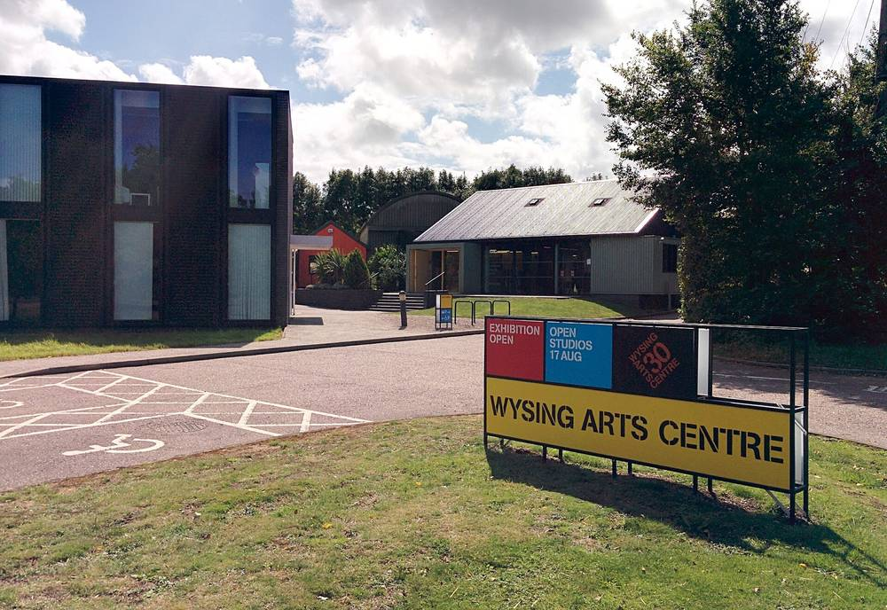

영국 사우스케임브리지셔, 올해 주민 기후사업 14곳에 17만1,000파운드…마을회관 태양광·예술센터 열펌프 지원

2019년부터 주민 사업 110곳에 100만 파운드 넘게 지원한 '탄소제로 공동체' 기금…신청 단체 23곳에서 37곳으로 늘어
영국 사우스케임브리지셔 지역의회가 주민 단체의 기후 대응 사업을 돕는 '탄소제로 공동체(Zero Carbon Communities)' 기금으로 올해 14개 단체에 17만1,000파운드를 지원한다. 2019년 기금을 만든 뒤 지금까지 110개 주민 사업에 100만 파운드가 넘게 나갔고, 올해 신청 단체는 지난해 23곳에서 37곳으로 늘었다. 본 마을의 와이징 예술센터는 태양광 패널 32장과 공기열 히트펌프 4대, 전기차 충전기, 7,500리터 빗물 저장조를 갖췄는데, 15만1,000파운드가 든 이 사업에 의회가 1만5,000파운드를 보탰고 나머지는 영국 예술위원회와 카운티 의회 등이 냈다. 센터는 시설 개선으로 아낀 돈을 청소년을 위한 무료 작업장과 기술 교육에 다시 쓰겠다고 밝혔다. 하스턴 마을 주민들은 케이크 판매와 커피 모임, 퀴즈의 밤으로 6,000파운드를 모은 뒤 1만2,500파운드를 지원받아 마을회관에 태양광과 배터리를 달았다.
시민에너지 관점
케이크를 팔아 모은 6,000파운드에 지역의회 지원금이 붙어 마을회관이 발전소가 되는 모습은, 시민에너지가 큰 자본이 아니라 작은 마중물에서 시작된다는 것을 보여 준다. 소액 지원이 흩어져 효과가 없다는 지적도 있지만, 아낀 전기요금이 청소년 교육으로 되돌아가는 것처럼 주민 사업의 이익은 공동체 안에서 다시 돈다. 한국의 마을회관·경로당·작은도서관도 지자체가 주민 모금과 짝을 맞춰 주는 방식(매칭)으로 지원하면, 마을이 직접 계획하고 관리하는 작은 발전소를 빠르게 늘릴 수 있다. 시·군은 해마다 신청을 받는 '주민 탄소제로 기금'을 만들고, 선정 과정과 성과를 주민에게 공개하기 바란다.
출처: BBC 2026-11-10 Kate Moser Andon 원문 보기
창간 전 시험 발행 기사입니다.
英サウスケンブリッジシャー、今年は住民の気候事業14件に17万1,000ポンド…村の集会所の太陽光や芸術センターのヒートポンプを支援
2019年から住民事業110件に100万ポンド超を支援してきた「ゼロカーボン・コミュニティー」基金…申請団体は23から37に増加
英国のサウスケンブリッジシャー地区議会は、住民団体の気候対策事業を支える「ゼロカーボン・コミュニティー」基金から、今年は14団体に17万1,000ポンドを支給する。2019年に基金を設けて以来、これまでに110件の住民事業に100万ポンドを超える資金が出ており、今年の申請団体は昨年の23から37に増えた。ボーン村のワイジング・アーツセンターは太陽光パネル32枚、空気熱ヒートポンプ4台、電気自動車の充電器、7,500リットルの雨水貯留タンクを備えたが、15万1,000ポンドかかったこの事業に議会が1万5,000ポンドを出し、残りはイングランド芸術評議会や州議会などが負担した。センターは設備改善で浮いたお金を若者向けの無料ワークショップや技能教育に再投資するとしている。ハーストン村の住民はケーキ販売やコーヒーの集い、クイズナイトで6,000ポンドを集めた後、1万2,500ポンドの助成を受けて村の集会所に太陽光と蓄電池を設置した。
市民エネルギーの視点
ケーキを売って集めた6,000ポンドに地区議会の助成金が加わり、村の集会所が発電所になる姿は、市民エネルギーが大きな資本ではなく小さな呼び水から始まることを示している。少額の支援は分散して効果がないとの指摘もあるが、浮いた電気代が若者の教育に回るように、住民事業の利益は共同体の中で再び循環する。韓国の村の会館や敬老堂、小さな図書館も、自治体が住民の募金に同額を上乗せする方式（マッチング）で支援すれば、村が自ら計画し管理する小さな発電所を素早く増やせる。市や郡は毎年申請を受け付ける「住民ゼロカーボン基金」をつくり、選定過程と成果を住民に公開してほしい。
出典: BBC 2026-11-10 Kate Moser Andon 原文を読む
創刊前の試験発行記事です。
英国南剑桥郡今年向14个居民气候项目拨款17.1万英镑…支持村会堂光伏和艺术中心热泵
“零碳社区”基金自2019年以来已资助110个居民项目逾100万英镑…申请团体由23个增至37个
英国南剑桥郡地区议会今年将通过支持居民团体气候行动的“零碳社区”（Zero Carbon Communities）基金，向14个团体拨款17.1万英镑。该基金2019年设立以来，已向110个居民项目拨付逾100万英镑；今年的申请团体从去年的23个增至37个。伯恩村的怀辛艺术中心安装了32块光伏板、4台空气源热泵、电动汽车充电桩和一个7,500升的雨水收集罐，这一耗资15.1万英镑的项目中，议会出资1.5万英镑，其余由英格兰艺术委员会和郡议会等承担。该中心表示，设施改善省下的钱将再投入面向青少年的免费工作坊和技能培训。哈斯顿村居民通过义卖蛋糕、咖啡聚会和问答之夜筹得6,000英镑，随后获得1.25万英镑资助，为村会堂安装了光伏和电池。
市民能源视角
靠义卖蛋糕筹集的6,000英镑加上地区议会的资助，让村会堂变成了发电站，这说明市民能源并非始于大资本，而是始于小小的“引水”。有人认为小额资助过于分散、难见成效，但正如省下的电费又回到青少年教育一样，居民项目的收益会在社区内部再循环。韩国的村会馆、敬老堂和小型图书馆，如果由地方政府按居民筹款额度配套资助，就能迅速增加由村庄自行规划和管理的小型电站。希望各市郡设立每年受理申请的“居民零碳基金”，并向居民公开评选过程和成果。
来源: BBC 2026-11-10 Kate Moser Andon 查看原文
本文为创刊前试发行文章。
South Cambridgeshire Awards 171,000 Pounds to 14 Community Climate Projects This Year, Backing Village Hall Solar and Arts Centre Heat Pumps
The Zero Carbon Communities fund has given more than 1 million pounds to 110 community projects since 2019, and applications rose from 23 to 37
South Cambridgeshire District Council is awarding 171,000 pounds this year to 14 groups through its Zero Carbon Communities grant fund, which supports residents' climate projects. Since the scheme was launched in 2019 it has funded 110 community projects with more than 1 million pounds, and applications this year rose to 37 from 23 last year. Wysing Arts Centre in Bourn has installed 32 solar panels, four air source heat pumps, electric vehicle charging points and a 7,500-litre rainwater harvesting tank; the council contributed 15,000 pounds to the 151,000-pound project, with the rest coming from Arts Council England, Cambridgeshire County Council and others. The centre said savings from the improvements would be reinvested in free workshops and skills programmes for young people. In Harston, villagers raised 6,000 pounds through cake sales, coffee mornings and quiz nights before securing a further 12,500-pound grant for solar panels and battery storage at the village hall.
Citizen Energy View
A village hall turned into a power station by 6,000 pounds from cake sales plus a council grant shows that citizen energy starts not with big capital but with small seed money. Some argue that small grants are too scattered to matter, but just as energy savings flow back into youth workshops, the gains from community projects keep circulating within the community. If Korean local governments matched residents' own fundraising for village halls, senior centres and small libraries, villages could quickly multiply small power plants they plan and manage themselves. Cities and counties should create an annual 'residents' zero carbon fund' and publish how projects are selected and what they achieve.
Source: BBC 2026-11-10 Kate Moser Andon Read the original
This article was published during the trial period before launch.